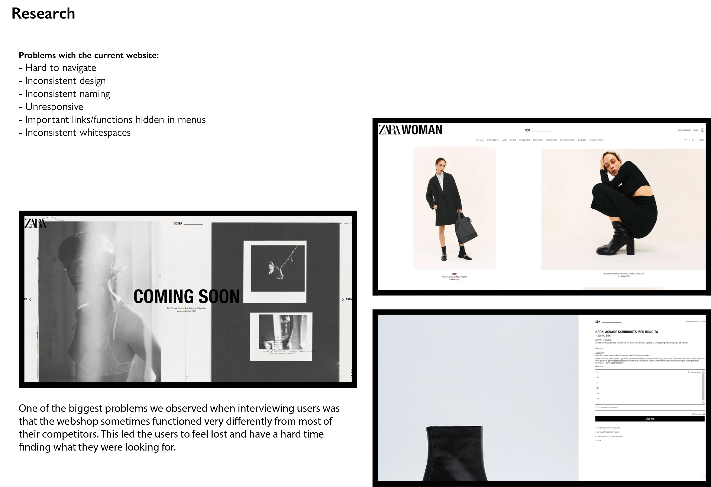
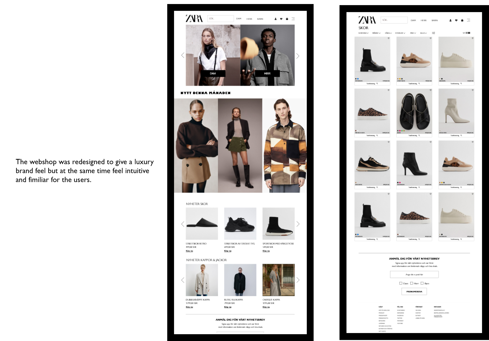
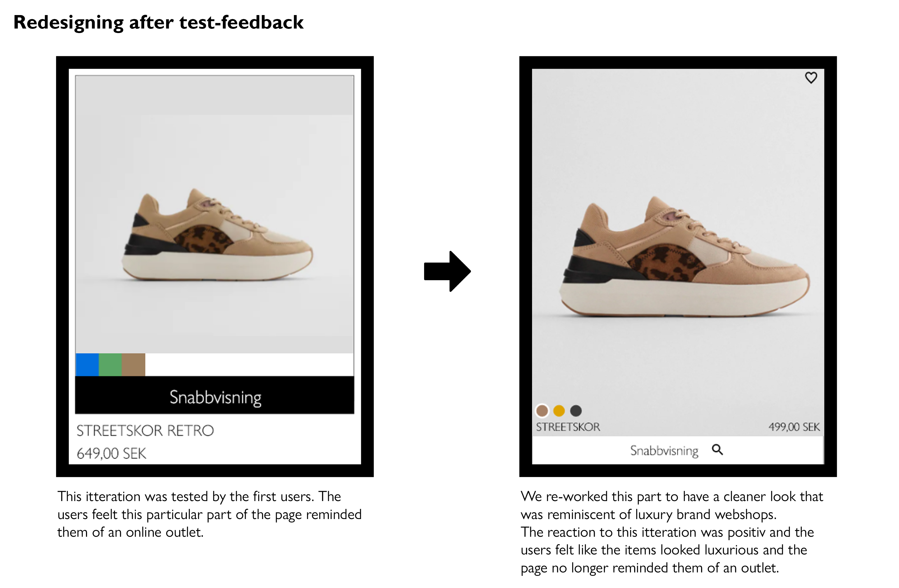
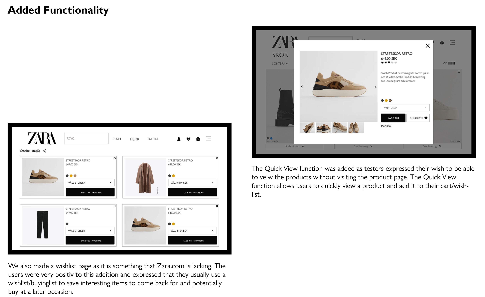

Webshop Redesign
- Role: Ux Designer
- Project date: October, 2020
- Prototype URL: Click to view prototype
Summery: This prototype was made as a part of a school project by Taif Abu Taleb, Malin Klang, Cigdem Yaz & Dani Dumitrescu. We chose to redesign Zara.com after interveiwing people about their online shopping habits and several complained about the poor design of Zara’s current webshop
Zara.com is a classic case of form over function, where the look of the website have been prioritized over a responsive and user friendly design. We made a re-design of the webshop so visitors could easily navigate thier way through the shop and feel at home when browsing Zara.com.